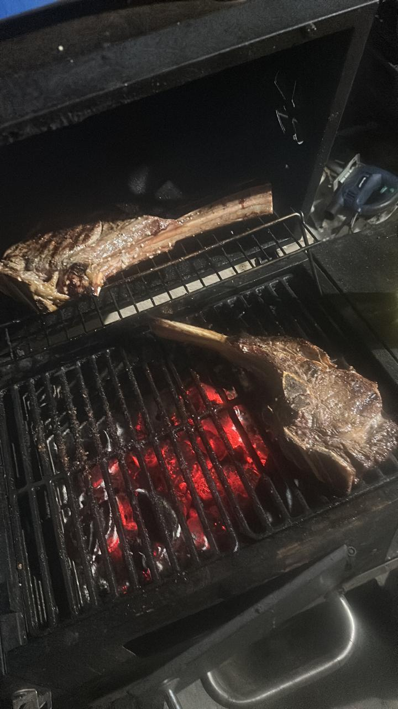

Tradición entre Brasas
La parrilla no es solo comida. Es tradición familiar. Entre carbón encendido y risas compartidas, él demuestra paciencia, técnica y dedicación.
La carne asada representa reuniones, historias contadas alrededor del fuego y una habilidad que ha perfeccionado con orgullo.